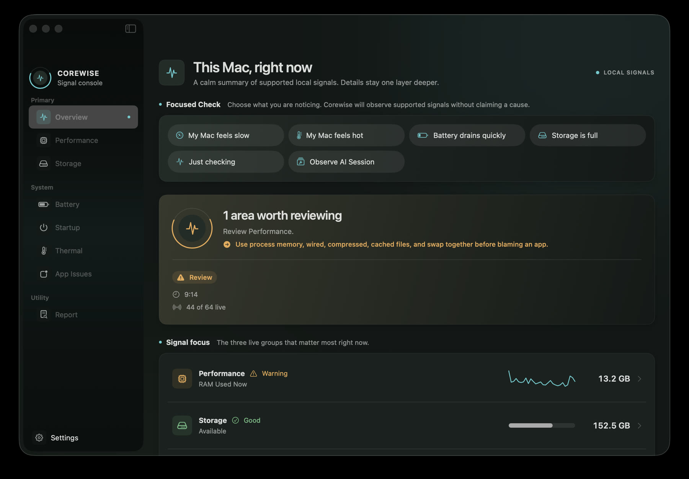

Public beta · macOS 14+
Your Mac.
In plain sight.
A private Mac performance monitor that turns CPU, memory, storage, thermal signals, and local AI workloads into one calm explanation.
Free · Open source · Universal DMG · No account

01 · Signal console
Not another cleaner.
A clearer instrument.
Corewise observes supported local evidence, explains why it matters, and leaves control with you. No invented health score. No panic. No one-click cleanup.
-
01
See what changed
Live process activity and short history reveal the shape of a slowdown, not just a frozen number.
-
02
Understand the signal
Memory, swap, thermal state, and storage are kept in context before an app gets blamed.
-
03
Take one safe step
Corewise recommends review and inspection, never destructive automation.
02 · AI Workloads
Know the local cost of building with AI.
Corewise separates the tool you opened from the builds, runtimes, and helpers working beneath it. Cloud activity stays explicitly outside the picture.
Read how attribution works03 · Local-first
Your Mac stays yours.
No backend. No analytics. No account. No automatic cleanup. Diagnostics are read locally and reports are copied only when you ask.
- AutomaticSupported local signals
- OptionalRead-only storage access
- NeverUploads or destructive actions
04 · Public beta
Signed, notarized,
and open to inspect.
- Requires
- macOS 14+
- Runs on
- Apple Silicon + Intel
- License
- MPL-2.0
- Distribution
- Notarized universal DMG
05 · Before you install
The important details.
Does Corewise require Full Disk Access?
No. Normal diagnostics work without it. Full Disk Access is optional and used only when you explicitly start read-only Full Storage Analysis.
Can Corewise see cloud AI agents?
No. AI Workloads observes attributable local processes. It does not read prompts, projects, cloud usage, process arguments, or working directories.
Does Corewise fix or delete anything?
No. Corewise explains supported signals and points to safe next steps. It does not kill processes, delete files, or claim a single health verdict.
How are updates delivered?
The first release line uses manual updates from GitHub Releases. The update model will expand only after its networking and trust boundaries are reviewed.
Local signals, clearly